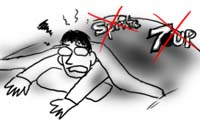
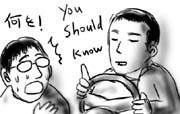

せっかくの休日ですが，頭と目と肩と親不知が痛くて痛くて，体がだるくてだるくて仕方がなかったので寝ていました．一体僕の体に何が起きているのだろう．
日本だと病人食としておかゆがあるけど，この国ではどうなっているのか気になって，以前，体の調子が悪い場合，特に胃が悪い場合は何を食べるのか同僚に尋ねてみたことがあります．
オートミールとか，そういう答えを期待していたのですが，帰って来た答えは「7upかSprite」でした．どういう理屈なのでしょうか．

そして，現在，炭酸飲料はあいにく冷蔵庫にありません．どうしよう．
感謝祭で休日でした．
同僚のToddがディナーに誘ってくれたので，何もすることがないまま過ごすことはなくなりました．ありがたいことです．特に手みやげにするものが無かったので，買ったまま放置していた「乾燥カワハギのせんべい」と「チキンラーメン」をつかんで参上．(彼らにとっての)物珍しさで勝負．チキンラーメンを「日本で最初のインスタントラーメンプロダクト」と紹介することで一気におみやげのレア度を増します．言葉のマジック！(こすい)
Toddの母ちゃん(Hapkidoで有名)や，Toddの彼女のCarolynとその親戚一同も登場し，ターキーなどが振る舞われます．ターキーはあまり食べた経験がなかったのですが，脂の少ないチキンという感じで，グレービー(肉汁)ソースをかけないとちょっとパサパサしますが，合わせるとかなりいけます．その他にも芽キャベツの炒め物やマッシュルームとポテトのサラダなんかも美味しかったです．
Toddは，以前昼飯に一緒に出かけた時に，たまたま僕が，Brian Eno & David Bryneの「My Life in the Bush of Ghost」を聴いていたのに超反応して来て以来，音楽ネタが通じる相手として大変貴重な存在なのですが，今日もBjörkのライブDVDを見せてもらいながら「プロデューサだったMark Bellが，LFOとして今週末にElectraglideってイベントで日本に来るんだよ」とかそういう話をダラダラと．
おまけに，彼は「一番最初に買ったDVDはBlade Runnerだったよ」「俺も！」という会話をして以来，Philip K. Dickのファンであることも分かっているので「Paycheckとかどうよ？」とそういう話もダラダラと．誰も会話に割り込んでこないのが多少気がかりです．そんな僕らを見て，Carolynが一言「あなた達，双子みたいね？」．
いや，それは言い過ぎ．
インターンで働いていた学生さんが今日で最後の出勤ということで，グループランチが執り行われました．
近くの日本食レストランへ分乗して行ったのですが，運転手を買って出たSeanは，運転中に「日本にはお金払ってお姉ちゃんが横に座るバーがいっぱいあるんだろ？」と聞いて来ます．いきなり何を！「いや確かにいっぱいあるけど行った事ないよ」と答えると「行くべきだろ」と言います．「なぜ行くべきなの？」と聞き返すと，遠くを見つめて「お前は知らなければならない」と答えます．何を！

日本食レストランでは，親子丼とかを食しました．こちらでは「日本食＝健康食」という扱いなので，食事が終わった後，同僚のKhanhが「いやぁいい昼飯だった．脂分もないし，添加物もないし」と言っているので，「いや，日本食って塩分とMSGを無茶苦茶使うよ？」と教えたところ「マジで！」と驚いていました．
こうやって一つ一つ幻想を打ち破って行きたい．
同僚Duyの仕事を手伝っていたところ，夜9時を回ってしまいました．
引き止めて悪いと思ったのか，Duyが「ちょうど嫁が晩飯に麺を茹でるところだから，家に来て食べないか？」と誘ってくれました．家に食料のストックもないし，ありがたく呼ばれることにします．Duyは「いやぁ，今日は運がいいよ．いつもは遅くなると晩飯ないからなぁ」と言っています．Duy…(肩に手を置きながら)．
Duyの家では，3人の子供達が，物珍しい来客を眺めに代わる代わるやって来ます．にこやかに挨拶しながら，奥さんの出してくれた麺をすすります(音を立てないように！)．いつも食べているフォーとは違って，にゅうめんみたいな食感．薄味で，体が温まって，胃に優しい感じでこれも大変いいですね．麺類万歳！
麺をずるずると食べ終わって(音を立てないように！)，お茶を飲んでいると，Duyが「そこの奥のタッパー取ってくれないか」と言います．「はいよ」と渡すと中から出て来たのは味付け海苔．やっぱりか！
「ちゃんとタッパーに入れるようにしたんだ」とDuyは満足そうに言います．というわけでデザートは味付け海苔でした．
なんというか，期待を裏切りません．(参考:2003/10/17, 2003/8/26)